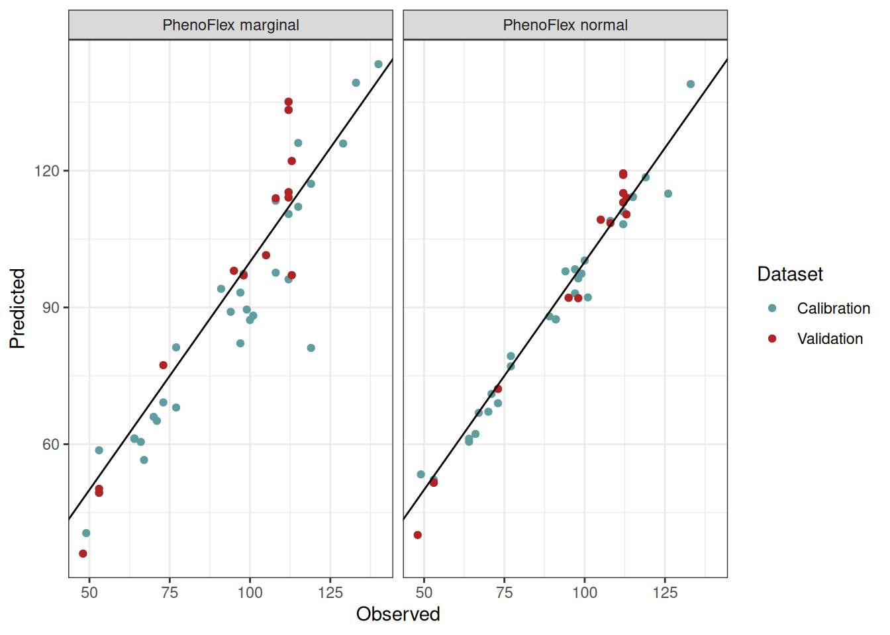

Chapter 32 Can we improve the performance of PhenoFlex?
Learning goals for this lesson
- Parameterize the
PhenoFlexmodel with experimental data - Assess the impact of marginal seasons on the predictive performance of
PhenoFlex
32.1 The motivation
As we have seen during the chapters The PhenoFlex model and The PhenoFlex model - a second look, the PhenoFlex model is rather recent and needs to be validated under different conditions. In addition, some results obtained in the original publication (Luedeling et al., 2021) suggest temperature responses during chill accumulation that seem implausible (see below, in particular the chill response for PhenoFlexfitted for Apple ‘Boskoop’).
Note in the figure above the chill response for apple cv. “Boskoop” for temperatures above 25 °C. As we have learned in previous chapters, such high temperature may even be counterproductive for chill accumulation. This response estimated by PhenoFlex may suggest that conditions used for calibrating the modelling framework didn’t vary widely enough during the endo-dormancy period and point out the need for more relevant temperature conditions in the calibration data set to obtain an appropriate set of parameters.
32.2 Using experimental phenology data for assessing the performance of PhenoFlex
In our lab, we had the idea of using the data generated in the tree-moving experiment and analyzed in the chapter on Experimentally enhanced PLS to calibrate the PhenoFlex model. This chapter presents an overview of the process and the main results. For more details, refer to the published version of the analysis (Fernandez et al., 2022) (Link).
We will first load the weather and phenology data from the data folder and apply some cleaning procedures to comply with PhenoFlex format. If you don’t have the files yet, please first download them and save them in the data folder.
library(chillR)
library(tidyverse)
# Load the data from the folder
data <- read_tab("data/final_weather_data_S1_S2_apple_hourly.csv")
# Generate a new column (Year_2) to simulate the year and comply with the format of PhenoFlex functions
data["Year_2"] <- data$Treatment + data$Year
# Since this experiment was conducted during two consecutive seasons, the next step will fix a small continuity issue
# generated during the season 2
data[data$Treatment >= 34, "Year_2"] <-
data[data$Treatment >= 34, "Year_2"] - 1
# For further compatibility, I will now select the columns needed and will drop "Year" (the original one)
data <- data[c("YEARMODA", "Year_2", "Month",
"Day", "Hour", "JDay", "Temp")]
# To replace the missing "Year" column, I will now change the name of the column
colnames(data)[which(colnames(data) == "Year_2")] <- "Year"
# Import the phenology data from the repository
pheno <- read_tab("data/final_bio_data_S1_S2_apple.csv")
# Remove troubling treatments
pheno <- pheno[!(pheno$Treatment %in% c(36, 3, 23, 24, 17, 18, 61)),
c("Treatment", "pheno")]
pheno["Treatment"] <- pheno$Treatment + 2019
colnames(pheno) <- c("Year", "pheno")We can now take a look at the format of both datasets with the help of the head() function to see how they look:
- Weather records show the hourly temperature trees were exposed to during the experiment.
| YEARMODA | Year | Month | Day | Hour | JDay | Temp |
|---|---|---|---|---|---|---|
| 20180606 | 2019 | 6 | 6 | 0 | 157 | 13.60700 |
| 20180606 | 2019 | 6 | 6 | 1 | 157 | 12.49315 |
| 20180606 | 2019 | 6 | 6 | 2 | 157 | 11.76103 |
| 20180606 | 2019 | 6 | 6 | 3 | 157 | 11.11030 |
| 20180606 | 2019 | 6 | 6 | 4 | 157 | 10.45488 |
| 20180606 | 2019 | 6 | 6 | 5 | 157 | 11.95780 |
- Phenology data show the date of full bloom (in day of the year), which was recorded as the moment we observed 50% of flowers open with first petals falling according to the BBCH scale.
| Year | pheno |
|---|---|
| 2020 | 115 |
| 2021 | 98 |
| 2023 | 64 |
| 2024 | 49 |
| 2025 | 64 |
| 2026 | 50 |
In both datesets, you can see the column treatment representing a “fake” year or season that corresponds to the actual treatment used in the experiment.
For comparison, we developed two versions of the analysis for calibrating the PhenoFlex model. In version 1 (hereafter PhenoFlex_marginal), we included all available experimental seasons, including five seasons that may have been marginal in terms of temperature to overcome the dormancy of apple trees. In version 2 (hereafter PhenoFlex_normal), we removed these seasons from the calibration data set.
As you can see in the figure above, we identified these five marginal seasons as a small cluster at the upper limit of the distribution after sorting the seasons according to the mean temperature experienced by the trees between the beginning of the experiment and the moment we recorded full bloom.
In the following chunk we are just creating different datasets for the two versions of the analysis. The treatments represented by the years c(2032, 2061, 2065, 2077, 2081) were identified as marginal seasons and removed from the calibration data set in PhenoFlex_normal.
We can now do the same for the weather data by defining two vectors containing the seasons we want to use for model calibration. We will randomly select 40 seasons for calibration in both versions of the analysis, leaving the remaining 14 experimental seasons for validation.
# Define a vector of calibration and validation seasons. Marginal includes
# the marginal seasons
calibration_seasons <-
sort(sample(pheno_normal$Year,
40,
replace = FALSE))
calibration_seasons_marginal <-
sort(c(sample(calibration_seasons,
35,
replace = FALSE),
pheno_marginal$Year[which(!(pheno_marginal$Year %in%
pheno_normal$Year))]))
calibration_seasons_normal <- calibration_seasons
# Common validation seasons
validation_seasons <-
sort(pheno_normal[!(pheno_normal$Year %in%
calibration_seasons), "Year"])
# Define the list of seasons (weather data)
season_list_marginal <-
genSeasonList(data,
mrange = c(9, 7),
years = calibration_seasons_marginal)
season_list_normal <-
genSeasonList(data,
mrange = c(9, 7),
years = calibration_seasons_normal)Now we can apply what we learned in the chapter The PhenoFlex model and fit the model parameters to data. Note that we start the fitting procedure with wide ranges (particularly for yc and zc) in order to let the model find the best estimates.
# Set the initial parameters (wide ranges)
# yc, zc, s1, Tu, E0, E1, A0, A1, Tf, Tc, Tb, slope
lower <-
c(20, 100, 0.1, 0, 3000.0, 9000.0, 6000.0, 5.e13, 0, 0, 0, 0.05)
par <-
c(40, 190, 0.5, 25, 3372.8, 9900.3, 6319.5, 5.939917e13, 4, 36, 4, 1.60)
upper <-
c(80, 500, 1.0, 30, 4000.0, 10000.0, 7000.0, 6.e13, 10, 40, 10, 50.00)
# Run the fitter
pheno_fit_marginal <-
phenologyFitter(par.guess = par,
modelfn = PhenoFlex_GDHwrapper,
bloomJDays = pheno_marginal[pheno_marginal$Year %in%
calibration_seasons_marginal,
"pheno"],
SeasonList = season_list_marginal,
lower = lower,
upper = upper,
control = list(smooth = FALSE,
verbose = FALSE,
maxit = 100,
nb.stop.improvement = 10))
# Same for version 2
pheno_fit_normal <-
phenologyFitter(par.guess = par,
modelfn = PhenoFlex_GDHwrapper,
bloomJDays = pheno_normal[pheno_normal$Year %in%
calibration_seasons_normal,
"pheno"],
SeasonList = season_list_normal,
lower = lower,
upper = upper,
control = list(smooth = FALSE,
verbose = FALSE,
maxit = 100,
nb.stop.improvement = 10))Note that we set the argument maxit in the control list to 100 to make the code run fast. For a real assessment, we should probably use greater values (e.g. 1,000).
We are saving the results of the fitting (model parameters and predicted bloom dates) and reading them from the folder to save time in future analyses.
write.csv(pheno_fit_marginal$par,
"data/PhenoFlex_marginal_params.csv",
row.names = FALSE)
write.csv(pheno_fit_normal$par,
"data/PhenoFlex_normal_params.csv",
row.names = FALSE)
write.csv(data.frame(pheno_marginal[pheno_marginal$Year %in%
calibration_seasons_marginal, ],
"Predicted" = pheno_fit_marginal$pbloomJDays),
"data/PhenoFlex_marginal_predicted_bloom.csv",
row.names = FALSE)
write.csv(data.frame(pheno_normal[pheno_normal$Year %in%
calibration_seasons_normal, ],
"Predicted" = pheno_fit_normal$pbloomJDays),
"data/PhenoFlex_normal_predicted_bloom.csv",
row.names = FALSE)Let’s take a look at some results from the fitting procedure. We can obtain the predictions by the model using the fitted parameters and then estimate the prediction error.
# Read the parameters
params_marginal <- read.csv("data/PhenoFlex_marginal_params.csv")[[1]]
params_normal <- read.csv("data/PhenoFlex_normal_params.csv")[[1]]
# Generate a data set to collect the outputs of the fitting for the calibration data
out_df_marginal <- read.csv("data/PhenoFlex_marginal_predicted_bloom.csv")
out_df_normal <- read.csv("data/PhenoFlex_normal_predicted_bloom.csv")
# Compute the error (observed - predicted)
out_df_marginal[["Error"]] <-
out_df_marginal$pheno - out_df_marginal$Predicted
out_df_normal[["Error"]] <-
out_df_normal$pheno - out_df_normal$PredictedWe can now compute some model performance metrics based on the prediction error estimated above. This is not very relevant during the calibration procedure, but it can give us an idea on how the two PhenoFlex versions compare.
| Metric | PhenoFlex_marginal | PhenoFlex_normal |
|---|---|---|
| RMSEP | 10.61386 | 3.837238 |
| RPIQ | 3.39179 | 10.163561 |
There is certainly room for improvement (especially considering that we only used 10 iterations), but the results give us a clear indication that calibrating the model with the marginal seasons reduced the performance of PhenoFlex.
Let’s plot some results.
out_df_all <- bind_rows("PhenoFlex marginal" = out_df_marginal,
"PhenoFlex normal" = out_df_normal,
.id = "PhenoFlex version")
# Plot the observed versus predicted values
ggplot(out_df_all,
aes(pheno,
Predicted)) +
geom_point() +
geom_abline(intercept = 0, slope = 1) +
labs(x = "Observed") +
facet_grid(~ `PhenoFlex version`) +
theme_bw()We can see in the plot that the version including the marginal seasons shows a greater dispersion compared to the version excluding the marginal seasons in the calibration of the framework.
32.3 Validation
We should probably now take a look at how well both versions can predict bloom dates for seasons that were not contained in the calibration data set. We need to extract the model parameters and use the function PhenoFlex_GDHwrapper() to complete this task. Remember, we are using a common set of seasons for validation of both the PhenoFlex_marginal and PhenoFlex_normal versions.
# Generate a validation data set with phenology data
valid_df_marginal <- pheno_marginal[pheno_marginal$Year %in%
validation_seasons, ]
valid_df_normal <- pheno_normal[pheno_normal$Year %in%
validation_seasons, ]
# Generate a list of seasons with weather data for the validation procedure
valid_season_list <- genSeasonList(data,
mrange = c(9, 7),
years = validation_seasons)
# Estimate the bloom dates with PhenoFlexGDHwrapper
for (i in 1 : nrow(valid_df_marginal)) {
valid_df_marginal[i, "Predicted"] <-
PhenoFlex_GDHwrapper(valid_season_list[[i]],
params_marginal)
}
# The same for the second version
for (i in 1 : nrow(valid_df_normal)) {
valid_df_normal[i, "Predicted"] <-
PhenoFlex_GDHwrapper(valid_season_list[[i]],
params_normal)
}
# Compute the error (observed - predicted)
valid_df_marginal[["Error"]] <-
valid_df_marginal$pheno - valid_df_marginal$Predicted
valid_df_normal[["Error"]] <-
valid_df_normal$pheno - valid_df_normal$PredictedSince we already know the difference between the observed values and the values predicted by the model (i.e. the prediction error) in the validation data set, we can estimate some model performance metrics such as the RMSEP and the RPIQ. To this end, we can use the functions RMSEP() and RPIQ() from chillR.
| Metric | PhenoFlex_marginal | PhenoFlex_normal |
|---|---|---|
| RMSEP | 6.643169 | 4.246336 |
| RPIQ | 6.171753 | 9.655382 |
The results shown in the table above confirm the pattern we observed in the calibration procedure. The inclusion of the marginal seasons lowered the performance of PhenoFlex. But it is always nice to see the results in a more graphically way, right? So, let’s plot them!
# Create a unique data set
valid_df_all <-
bind_rows("PhenoFlex marginal" = valid_df_marginal,
"PhenoFlex normal" = valid_df_normal,
.id = "PhenoFlex version")
# Plot the calibrated and validated
ggplot(out_df_all,
aes(pheno,
Predicted,
color = "Calibration")) +
geom_point() +
geom_point(data = valid_df_all,
aes(pheno,
Predicted,
color = "Validation")) +
scale_color_manual(values = c("cadetblue",
"firebrick")) +
geom_abline(intercept = 0,
slope = 1) +
labs(x = "Observed",
color = "Dataset") +
facet_grid(~ `PhenoFlex version`) +
theme_bw()
Again, here we see that the red dots (representing the validation seasons) in PhenoFlex_marginal are more dispersed and placed at a greater distance from the line x = y compared to the red dots from the PhenoFlex_normal version.
We will now take a look at the chill and heat response curves for both versions of the analysis. To this end, we will make use of the functions apply_const_temp(), gen_bell(), and GDH_response() that we created in the chapter The PhenoFlex model - a second look. We will load the functions again and will hide this process with the chunk options.
# Create a data set with theoretical temperatures and heat and chill responses
temp_response_marginal <- data.frame(Temp = seq(-5, 60, 0.1),
Chill_res = gen_bell(params_marginal,
temp_values = seq(-5, 60, 0.1)),
Heat_res = GDH_response(params_marginal,
seq(-5, 60, 0.1)),
Version = "PhenoFlex marginal")
temp_response_normal <- data.frame(Temp = seq(-5, 60, 0.1),
Chill_res = gen_bell(params_normal,
temp_values = seq(-5, 60, 0.1)),
Heat_res = GDH_response(params_normal,
seq(-5, 60, 0.1)),
Version = "PhenoFlex normal")
# Generate a single data set
temp_response <- bind_rows(temp_response_marginal,
temp_response_normal)
# Plotting
ggplot(temp_response,
aes(Temp)) +
geom_line(aes(y = Chill_res,
color = "Chill")) +
geom_line(aes(y = Heat_res * 25,
color = "Heat")) +
scale_y_continuous(expand = expansion(mult = c(0.001, 0.01)),
sec.axis = sec_axis(~ . / 25,
name = "Arbitrary heat units")) +
scale_x_continuous(expand = expansion(mult = 0)) +
scale_color_manual(values = c("blue4",
"firebrick")) +
labs(x = "Temperature (°C)",
y = "Arbitrary chill units",
color = NULL) +
facet_grid(Version ~ .) +
theme_bw() +
theme(legend.position = c(0.85, 0.85))We see some differences in the chill response among versions, but similar heat curves. To some extent, PhenoFlex_normal emulates the chill response observed in the original chill model (i.e. the Dynamic model). Note that in PhenoFlex_marginal the accumulation of chill only starts at temperatures above 5 °C. Regarding the heat response, PhenoFlex_normal shows accumulation of heat with slightly higher temperatures than the curve shown for PhenoFlex_marginal. Since we used very few model iterations, however, these results are difficult to interpret.
32.4 Conclusions
This was just an abbreviated version of the analysis we conducted, but it gives us some interesting insights on the potential limitations of the modelling framework. It seems possible that under extreme conditions, the process of dormancy breaking is modulated by mechanisms that are not considered in the PhenoFlex framework (or in any other frameworks that are currently available). To test this hypothesis, however, additional systematic studies would have to be conducted.